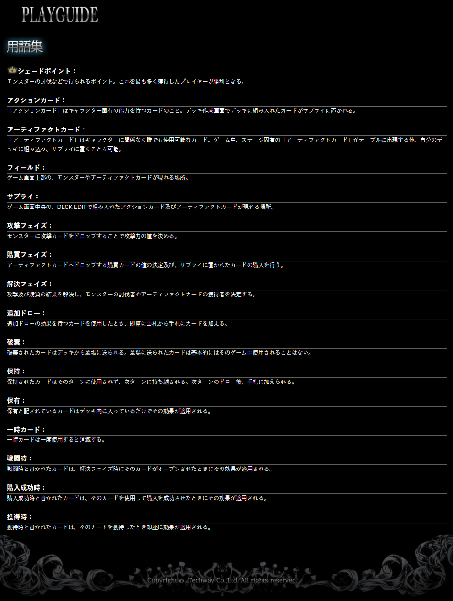

FAQ & RULE
-

메인 화면의 FAQ와 RULE에 대해 알아봅니다.
FAQ와 RULE에 적힌 내용을 읽는 것에 의의가 있으니, 이해하지 못해도 괜찮습니다.
별도로 설명하는 문서가 준비됩니다.
이하 내용은 "마마호호"님의 도움을 받아 작성되었습니다.
-
[ FAQ ]
-
덱 구축에 대해서
덱은 (최대) 3명의 캐릭터와 (최대) 24장의 카드로 구성됩니다. 덱 구성화면에서 [액션 카드] 또는 [아티팩트 카드]의 출현 순서를 변경할 수 있습니다. -
몬스터 토벌 성공 여부에 대해서
[해결 페이즈]가 되면, (특정 몬스터에) 드랍한 카드의 공격력만큼 해당 몬스터의 HP가 깎입니다. 몬스터의 HP가 0이 되면, 해당 턴에 가장 많은 대미지를 준 플레이어가 토벌성공자로 선정됩니다.
-
[아티팩트 카드] 구매 성공 여부에 대해서
필드에 나타난 [아티팩트 카드]는 가격을 가지고 있으며, 해당 가격 이상의 [구매 카드]를 드랍한 플레이어 중 가장 높은 수치를 드랍한 플레이어가 구매를 하게 됩니다. 또한, 구입에 실패한 플레이어는 드랍했던 ([구매 카드]의) 구매력의 절반(내림)을 [일회용] GEM 카드로 다음 턴에 얻습니다. -
(어떤 몬스터 또는 아티팩트 내에서의) 공격/구매 해결 순서에 대해서
[해결 페이즈]가 되면, 공격 및 구매의 해결은 [SP]가 적은 플레이어부터 이루어집니다. 또한, 토벌 및 구매 성공시에 동일한 대미지 또는 구매력을 행사한 플레이어가 2명 이상 존재할 경우, [SP]가 가장 적은 플레이어가 토벌 및 구매 성공자가 됩니다.
-
HP에 대해서
몬스터에게 대미지를 줄 경우, (그 대미지로) 몬스터의 HP가 0이 되지않는다면 (대미지를 입힌) 플레이어는 몬스터의 공격력만큼 대미지를 받습니다. 플레이어의 HP가 0이 되면 사망처리됩니다. -
「덱」 「카드뭉치」 「버린패」 의 표기에 대해서
「카드뭉치」는 (게임) 화면의 오른쪽에 쌓여있는 카드모음입니다. 이곳에서 매턴마다 「손패」로 5장을 드로우합니다. 드로우했던 카드들, 사용한 카드들, 구매한 카드들은 기본적으로 턴 종료시 (게임) 화면의 왼쪽의 「버린패」로 옮겨집니다. 「카드뭉치」가 모두 소모되었고 (동시에) 드로우를 해야할 때, 「버린패」의 카드들이 섞인 뒤 「카드뭉치」를 만듭니다. 「카드뭉치」 「손패」 「버린패」 모두를 합친 것을 「덱」이라고 합니다.
-
캐릭터의 색에 대해서
각 캐릭터마다 적색/백색/청색/녹색/황색을 가집니다. 적색은 공격 특화, 청색은 구매 특화 등 각 색상마다의 특색이 있습니다. -
주사위에 대해서
매턴마다 (기본적으로 3개의) 주사위를 굴리는데, 적색/백색/청색/녹색/황색/[와일드] 총 6가지 색으로 이루어진 주사위의 한쪽 면이 선택됩니다. 캐릭터와 몬스터는 주사위의 색에 따라 효과를 발휘하거나 능력이 강화됩니다. 추가로, [와일드] 면이 선택된 주사위는 적색/백색/청색/녹색/황색 면이 모두 선택된 것과 같습니다. (의역)
-
몬스터의 능력에 대해서
몬스터의 능력은 몬스터 카드 왼쪽에 표기된 주사위 조건이 충족될 때 발동합니다. (몬스터의) 효과가 발동하고 있을 때, 몬스터에게 아우라 모양의 이펙트가 나타납니다. -
캐릭터 레벨에 대해서
게임에 참가한 캐릭터는 경험치를 획득하고, 일정 수치를 획득하면 캐릭터의 레벨이 증가합니다. 향후 업데이트에서 캐릭터 레벨에 따른 보상(시스템)을 제공할 것입니다.
-
골든 카드에 대해서
[서플라이]에 골든 카드를 포함시킬 경우 경험치 보너스를 얻습니다. 각 캐릭터마다 [서플라이]에 포함된 골든 카드의 개수에 따라 경험치 보너스가 증가하는데, 1장마다 12.5%씩 최대 100%의 보너스가 붙습니다. 또한, (골든 카드는) 카드 분해시 (일반 카드보다) 포인트를 더 많이 획득할 수 있습니다. -
카드의 분해 및 합성에 대해서
일정 수량의 「혼돈수정」을 소비해 카드를 합성할 수 있습니다. 카드 합성시, 해당 카드의 색과 동일한 색의 「혼돈수정」이 필요합니다. 「혼돈수정」은 카드를 분해하여 얻을 수 있습니다. 카드의 합성 및 분해는 덱 편집화면의 「CRAFT」에서 할 수 있습니다.
-
[ RULE ]

-
이상으로 하위메뉴 [FAQ & RULE]편을 마칩니다.
하위메뉴 []편으로 내용이 이어집니다.